library(ggplot2)
library(arrow)Getting started with exploratory data visualization
visualization
ggplot2
plotnine
plotting
graphs
Learn to use ggplot2 and plotnine to explore data
We begin by loading the required visualization packages:
import pandas as pd
from plotnine import *Next we load data and take a quick look:
df <- arrow::read_parquet("data/df.parquet")
knitr::kable(head(df))| pair_id | time | actual_time | duration | vehicle_id | frame_id | local_x | local_y | v_length | v_width | v_class | v_vel | v_acc | lane_id | preceding | space_headway | time_headway | preceding_local_y | preceding_length | preceding_width | preceding_class | preceding_vel | preceding_acc |
|---|---|---|---|---|---|---|---|---|---|---|---|---|---|---|---|---|---|---|---|---|---|---|
| 47-39 | 0.0 | 2005-04-13 15:59:45 | 32.1 | 47 | 510 | 2.4 | 22.16 | 4.54 | 1.8 | 2 | 3.64 | 1.10 | 1 | 39 | 18.40 | 2.63 | 37.21 | 4.82 | 1.95 | 2 | 7.98 | 1.36 |
| 47-39 | 0.1 | 2005-04-13 15:59:46 | 32.1 | 47 | 511 | 2.4 | 22.53 | 4.54 | 1.8 | 2 | 3.76 | 1.59 | 1 | 39 | 18.65 | 2.66 | 38.02 | 4.82 | 1.95 | 2 | 8.11 | 1.20 |
| 47-39 | 0.2 | 2005-04-13 15:59:46 | 32.1 | 47 | 512 | 2.4 | 22.91 | 4.54 | 1.8 | 2 | 3.92 | 1.98 | 1 | 39 | 18.55 | 2.65 | 38.83 | 4.82 | 1.95 | 2 | 8.23 | 1.04 |
| 47-39 | 0.3 | 2005-04-13 15:59:46 | 32.1 | 47 | 513 | 2.4 | 23.31 | 4.54 | 1.8 | 2 | 4.12 | 2.19 | 1 | 39 | 18.44 | 2.63 | 39.66 | 4.82 | 1.95 | 2 | 8.33 | 0.86 |
| 47-39 | 0.4 | 2005-04-13 15:59:46 | 32.1 | 47 | 514 | 2.4 | 23.74 | 4.54 | 1.8 | 2 | 4.32 | 2.13 | 1 | 39 | 18.48 | 2.64 | 40.50 | 4.82 | 1.95 | 2 | 8.42 | 0.73 |
| 47-39 | 0.5 | 2005-04-13 15:59:46 | 32.1 | 47 | 515 | 2.4 | 24.18 | 4.54 | 1.8 | 2 | 4.54 | 2.20 | 1 | 39 | 18.40 | 2.63 | 41.34 | 4.82 | 1.95 | 2 | 8.50 | 0.58 |
The kable() function makes the table output pretty in html.
df = pd.read_parquet("data/df.parquet")
df.head() pair_id time ... preceding_vel preceding_acc
0 47-39 0.0 ... 7.98 1.36
1 47-39 0.1 ... 8.11 1.20
2 47-39 0.2 ... 8.23 1.04
3 47-39 0.3 ... 8.33 0.86
4 47-39 0.4 ... 8.42 0.73
[5 rows x 23 columns]The dataset was stored as a parquet file in a folder named data. parquet format is faster to read and write compared to the csv format. If you’d like to know more about the source of the data and how to store it yourself, read this post.
Visualizing distributions
Boxplot
Let’s plot vehicle length first.
Start with an empty canvas:
ggplot(data = df)
ggplot(data = df)<Figure Size: (640 x 480)>Then add aesthetic mappings (we map vehicle class to x-axis and vehicle length to y-axis):
ggplot(data = df,
mapping = aes(x = v_class, y = v_length))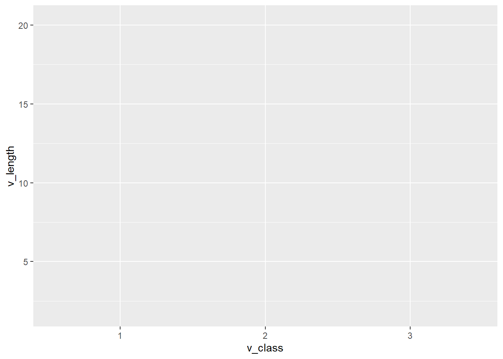
ggplot(data = df,
mapping = aes(x = "v_class", y = "v_length"))<Figure Size: (640 x 480)>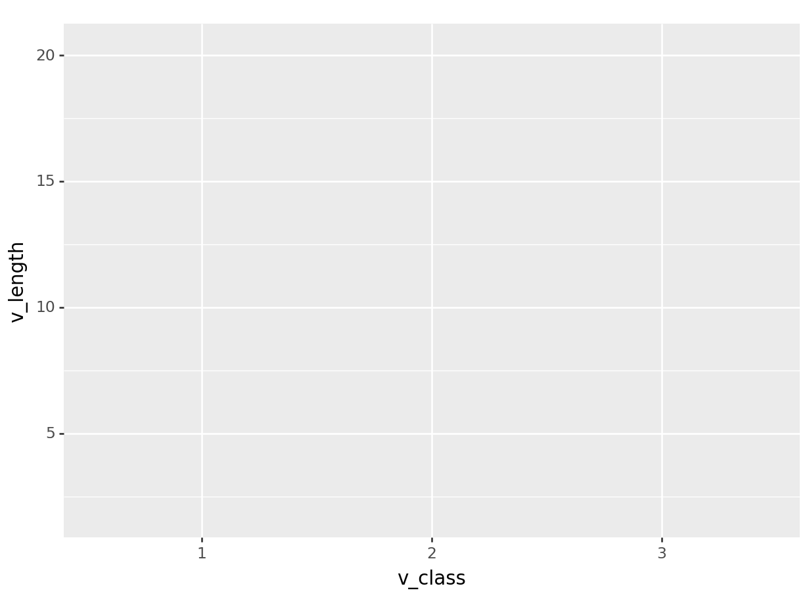
Note that the dataset df is specified without quotes but the columns v_class and v_length are provided in quotes.
You see the range of vehicle class and length variables on the plot, but there is no data on the plot pane because we did not specify how to draw it.
Let’s use the geometrical object boxplot to visualize the distribution of length of various vehicles:
ggplot(data = df,
mapping = aes(x = v_class, y = v_length)) +
geom_boxplot()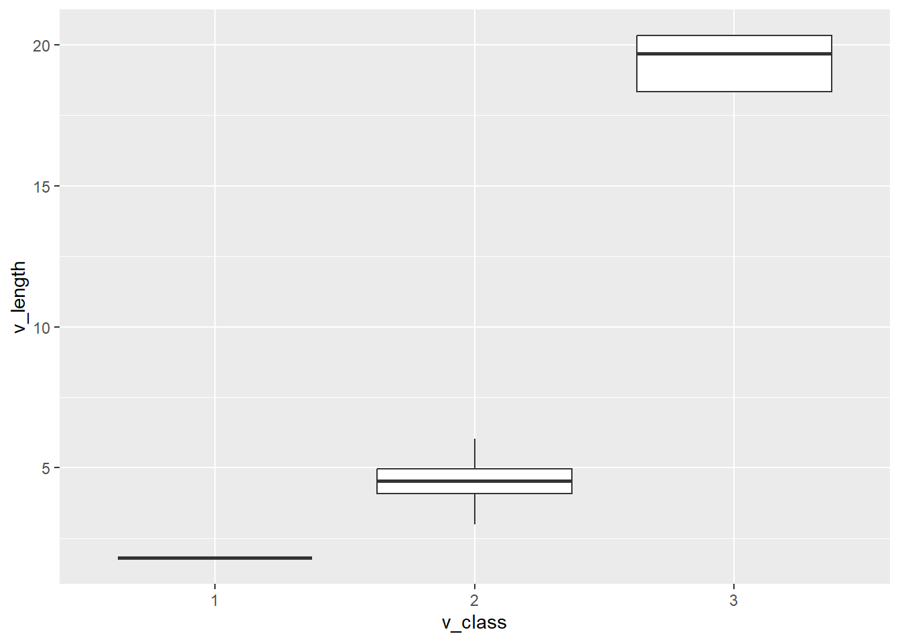
(
ggplot(data = df,
mapping = aes(x = "v_class", y = "v_length")) +
geom_boxplot()
)<Figure Size: (640 x 480)>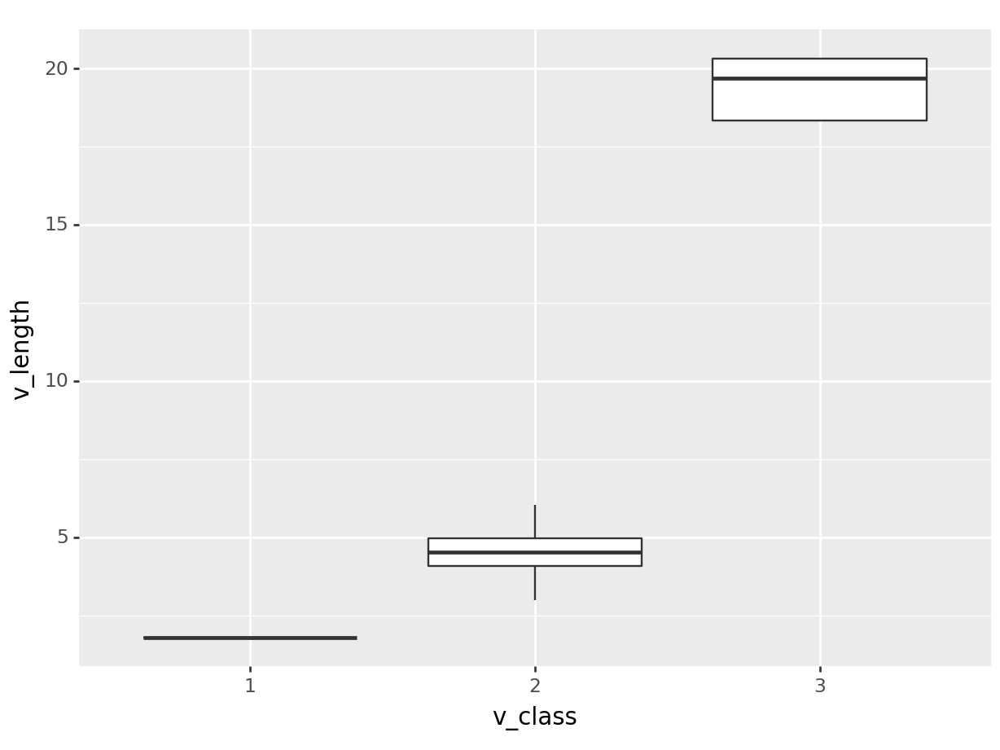
Note that the code is wrapped in parentheses (). This is because the plot would not render without wrapping the code it in ().
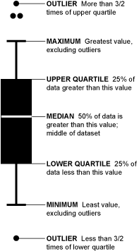
Reading a Boxplot: https://flowingdata.com/2008/02/15/how-to-read-and-use-a-box-and-whisker-plot/
Here we see three vehicle classes with the distribution of their length. Based on the information that 1, 2, and 3 represent motorcycle, car and heavy-vehicle, we change the labels on the plot:
ggplot(data = df,
mapping = aes(x = v_class, y = v_length)) +
geom_boxplot() +
scale_x_discrete(labels = c("Motorcycle", "Car", "HV"))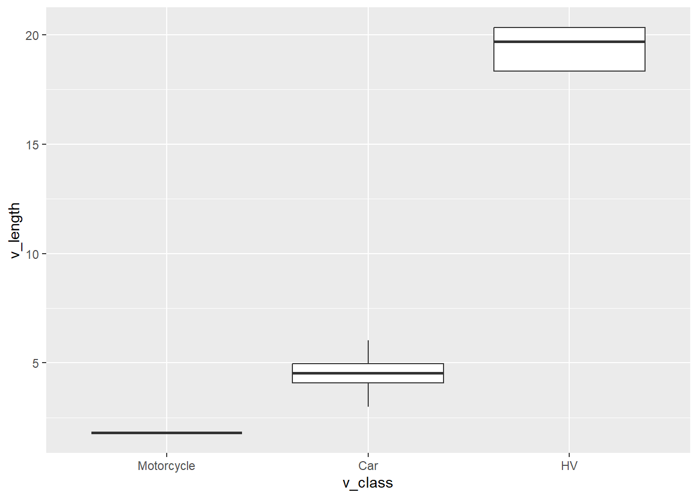
The function c() means combine. Here we combine three string (text) items.
(
ggplot(data = df,
mapping = aes(x = "v_class", y = "v_length")) +
geom_boxplot() +
scale_x_discrete(labels = ["Motorcycle", "Car", "HV"])
)<Figure Size: (640 x 480)>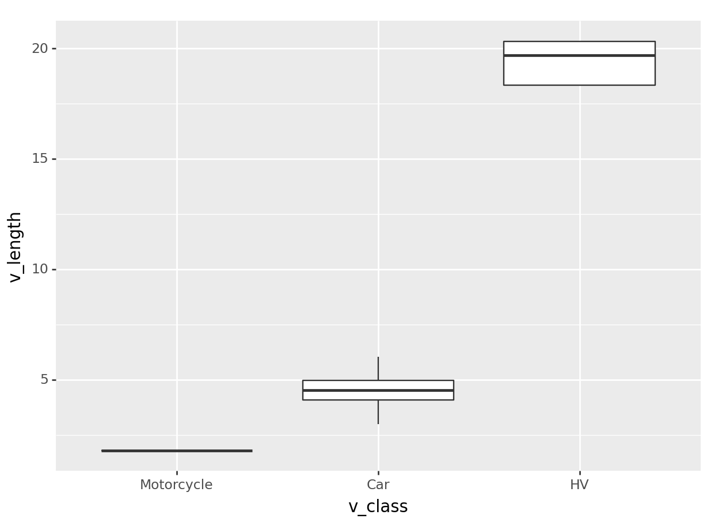
[] combines multiple strings in a data structure called a list.
We used scale_x_discrete() because v_class is a discrete data type with 3 categories. We used the parameter labels to specify the custom labels that replaced the actual data (1, 2, and 3) on the plot.
The main finding in this plot is that heavy-vehicles are much longer than cars and motorcycles. To make this plot even more readable, we provide the labs (labels) of the plot:
ggplot(data = df,
mapping = aes(x = v_class, y = v_length)) +
geom_boxplot() +
scale_x_discrete(labels = c("Motorcycle", "Car", "HV")) +
labs(x = NULL,
y = "Length (m)")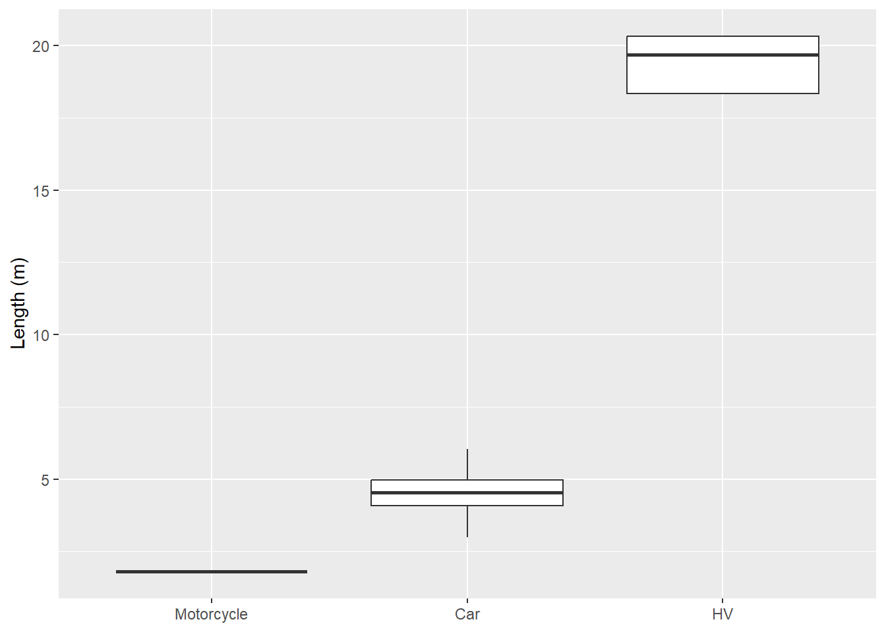
Specifying NULL for the x-axis label completely removes it.
(
ggplot(data = df,
mapping = aes(x = "v_class", y = "v_length")) +
geom_boxplot() +
scale_x_discrete(labels = ["Motorcycle", "Car", "HV"]) +
labs(x = "",
y = "Length (m)")
)<Figure Size: (640 x 480)>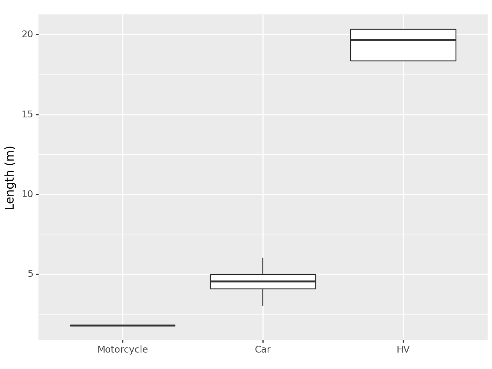
Specifying an empty string ("") for the x-axis label removes it.
Histogram and Density plots
Histogram and Density plots also help in understanding a variable distribution.
How histograms work: https://flowingdata.com/2017/06/07/how-histograms-work/
Let’s look at the histogram of speed (v_vel):
# Speed distribution
ggplot(data = df) +
geom_histogram(aes(x = v_vel, color = v_class, fill = v_class),
alpha = 0.4) +
scale_color_discrete(labels = c("motorcycle", "car", "HV")) +
scale_fill_discrete(labels = c("motorcycle", "car", "HV")) +
labs(x = "Speed (m/s)",
color = "Vehicle Class",
fill = "Vehicle Class")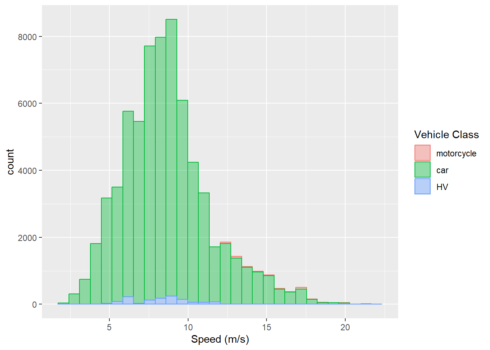
# Speed distribution
(
ggplot(data = df) +
geom_histogram(aes(x = "v_vel", color = "v_class", fill = "v_class"),
alpha = 0.4) +
scale_color_discrete(labels = ["motorcycle", "car", "HV"]) +
scale_fill_discrete(labels = ["motorcycle", "car", "HV"]) +
labs(x = "Speed (m/s)",
color = "Vehicle Class",
fill = "Vehicle Class")
)<Figure Size: (640 x 480)>
C:\Users\umair\ANACON~1\envs\homl3\lib\site-packages\plotnine\stats\stat_bin.py:109: PlotnineWarning: 'stat_bin()' using 'bins = 126'. Pick better value with 'binwidth'.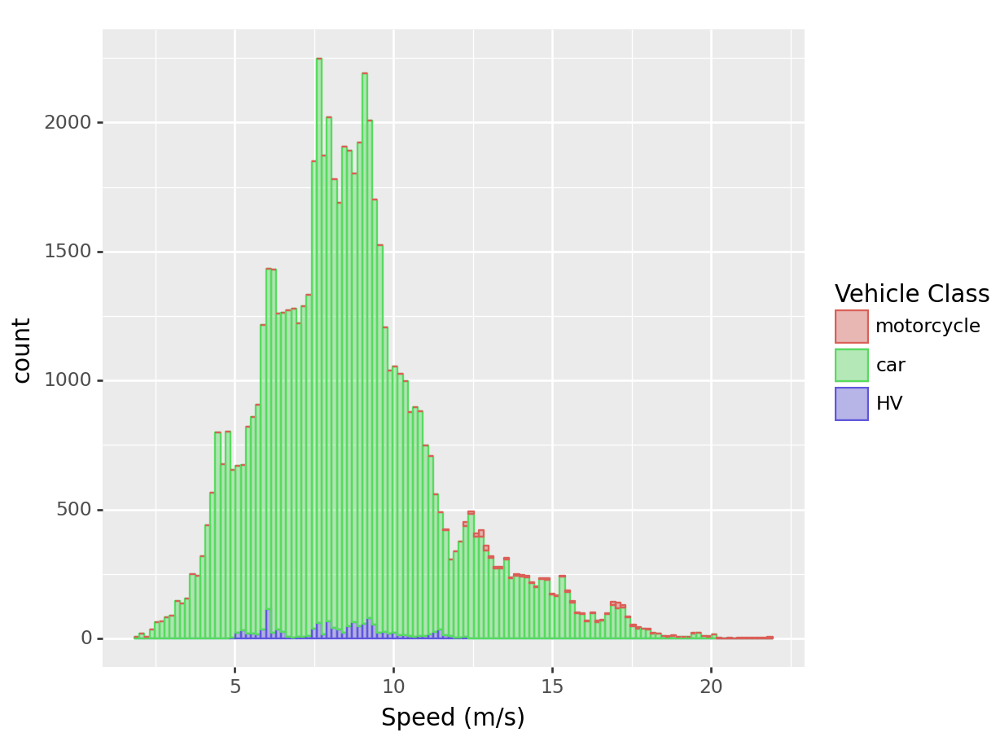
In this piece of code, we have used many new features:
coloraesthetic: To map thev_classvariable to the border color (also called as stroke) of the bars in histogram
fillaesthetic: To map thev_classvariable to the fill color of the bars in histogram
alphaproperty: The transparency level of the visualization.0.4means 40%. The default is 100%. Note thatalphais provided outside theaesthetics function
- Two scales are provided, one each for
colorandfillaesthetics
- Within
labs()the labels forcolorandfillaesthetics are also provided in addition to thexaesthetic
You may have noticed that y aesthetic is not specified here. This is because observation count was first calculated by ggplot2 in each interval of speed. Then the count was mapped to y.
The height of each bar in a histogram corresponds to the count of observations (rows in a dataframe) of the variable (speed in this case). We can see that the speed typically varies between 5 - 20 m/s. However, since the histograms are plotted on top of each other AND the count of observations varies significantly between different vehicle classes, we need a better visualization.
Instead of count on y-axis, we can ask ggplot to estimate the density and map it as the y aesthetic:
ggplot(data = df) +
geom_density(aes(x = v_vel, color = v_class, fill = v_class),
alpha = 0.4) +
scale_color_discrete(labels = c("motorcycle", "car", "HV")) +
scale_fill_discrete(labels = c("motorcycle", "car", "HV")) +
labs(x = "Speed (m/s)",
color = "Vehicle Class",
fill = "Vehicle Class")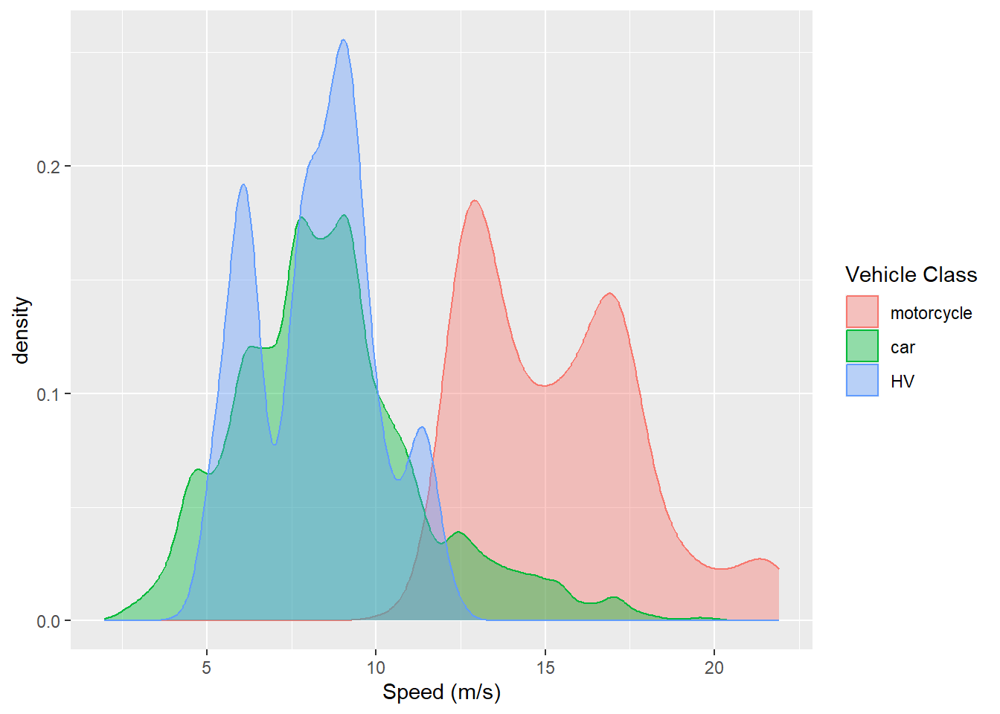
(
ggplot(data = df) +
geom_density(aes(x = "v_vel", color = "v_class", fill = "v_class"),
alpha = 0.4) +
scale_color_discrete(labels = ["motorcycle", "car", "HV"]) +
scale_fill_discrete(labels = ["motorcycle", "car", "HV"]) +
labs(x = "Speed (m/s)",
color = "Vehicle Class",
fill = "Vehicle Class")
)<Figure Size: (640 x 480)>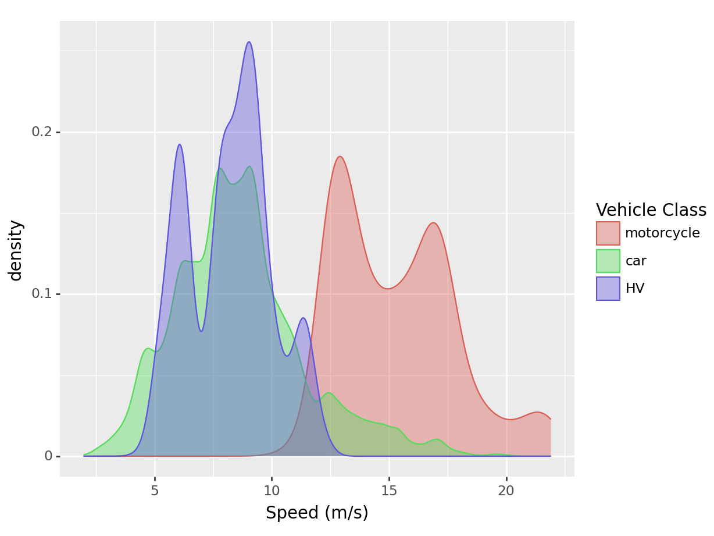
Now we can clearly see the differences in the speed distribution of different types of vehicles. Most motorcycles were much faster than cars and HVs.
Visualizing relationships
Space headway (or spacing) is generally assumed to vary with vehicle speed on highways. We can look at this relationship by mapping both the variables to x and y aesthetics.
Since there are 68339 observations in these data, using a hexagonal heatmap seems to be a good choice. ggplot2 documentation defines geom_hex as:
Divides the plane into regular hexagons, counts the number of cases in each hexagon, and then (by default) maps the number of cases to the hexagon fill.
Let’s use it:
ggplot(data = df,
aes(x = v_vel, y = space_headway)) +
geom_hex() +
geom_smooth(se = FALSE, color = "orange") +
labs(x = "Speed (m/s)",
y = "Spacing (m)")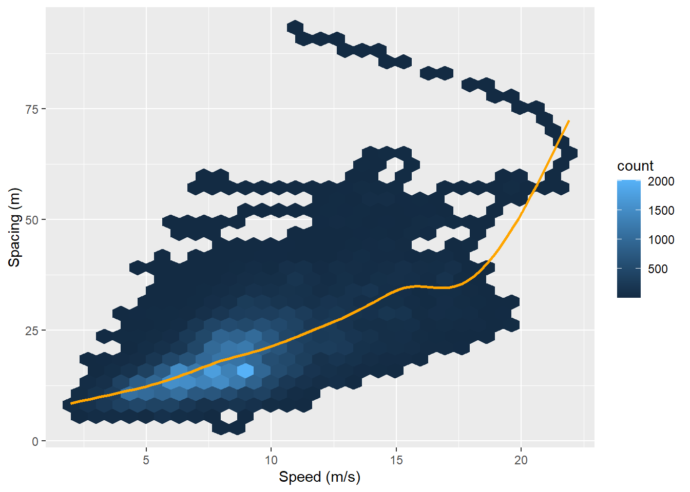
geom_hex is not yet implemented in plotnine. So, we create a scatterplot using geom_point():
(
ggplot(data = df,
mapping = aes(x = "v_vel", y = "space_headway")) +
geom_point(alpha = 0.1) +
geom_smooth(se = False, color = "orange") +
labs(x = "Speed (m/s)",
y = "Spacing (m)")
)<Figure Size: (640 x 480)>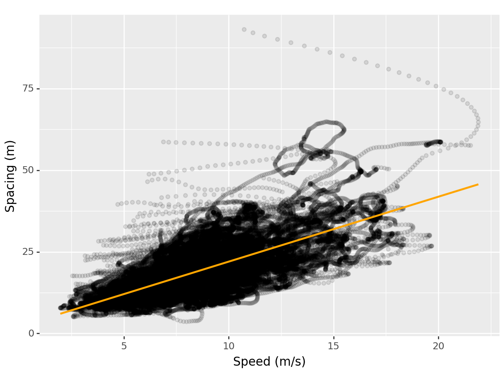
The plot shows a linear relationship between speed and spacing: vehicles at higher speed generally keep a higher spacing from the lead vehicle (preceding vehicle). This relationship is explicitly modeled by ggplot2 behind the scenes as it fits an algorithm to the data. The command used to achieve that is geom_smooth.
Car-following models employ spacing and speed-difference from the lead vehicle to forecast the speed of the subject vehicle. Let’s plot the spacing vs speed-difference plot to see the typical speed-difference at different levels of spacing:
ggplot(data = df,
aes(x = v_vel - preceding_vel, y = space_headway)) +
geom_point(aes(color = (v_vel - preceding_vel) < 0),
alpha = 0.5, shape = "x") +
facet_wrap(~v_class) +
labs(x = "Speed (m/s)",
y = "Spacing (m)")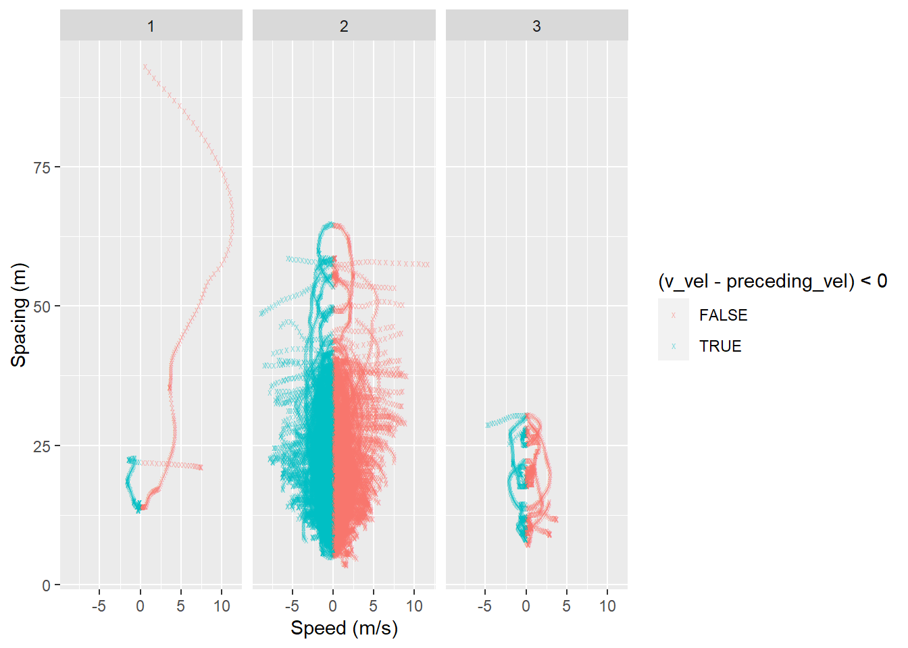
(
ggplot(data = df,
mapping = aes(x = "v_vel - preceding_vel", y = "space_headway")) +
geom_point(aes(color = "(v_vel - preceding_vel) < 0"),
alpha = 0.5, shape = "x") +
facet_wrap("~v_class") +
labs(x = "Speed (m/s)",
y = "Spacing (m)")
)<Figure Size: (640 x 480)>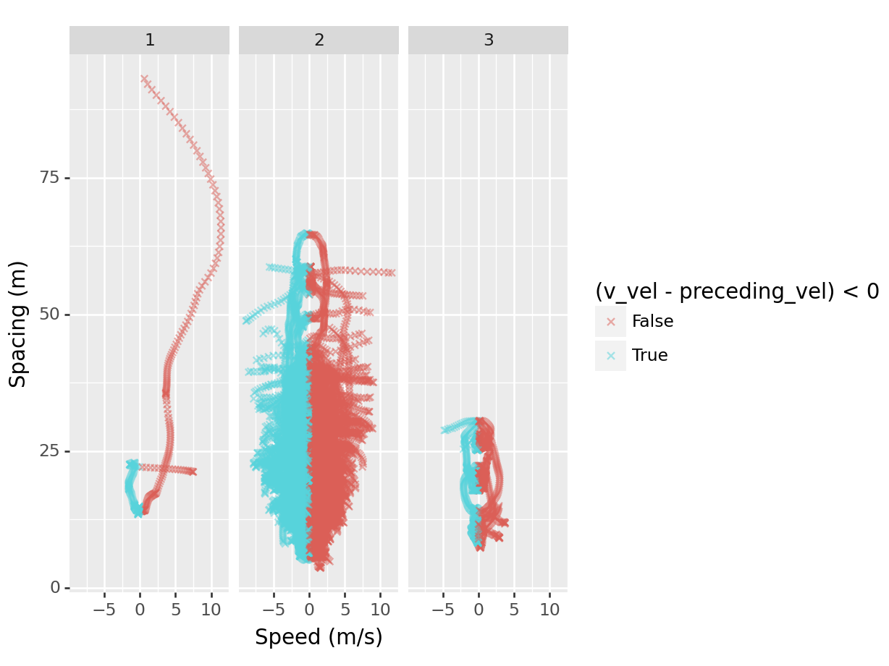
In this scatterplot, we used four new things:
- mapped a calculation from two columns to the
xaesthetic
- mapped the calculation
(v_vel - preceding_vel) < 0to colour - specified a different shape of the data points. You can find more shapes here
- created subplots for each
v_classby specifying it infacet_wrap(). Another option isfacet_grid()
The scatterplot shows that most of the data lies between -2.5 and 2.5 m/s.